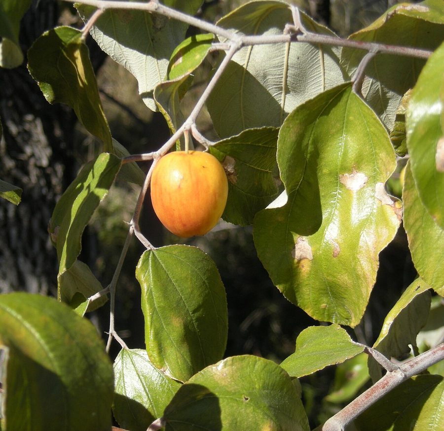

बेरIndian Jujube
Ziziphus mauritiana · Rhamnaceae · FLR-0046

- Scientific name
- Ziziphus mauritiana Lam.
- Family
- Rhamnaceae
- Hindi
- बेर
- Status here
- native
- IUCN
- not evaluated
When to look कब देखें
Present all year.
बेर / Indian Jujube
Ziziphus mauritiana Lam. — Rhamnaceae
बेर (इंडियन जुजुब) — उत्तर प्रदेश के ग्रामीण इलाकों, शुष्क वनों और झाड़ियों में पाया जाने वाला एक छोटा, कांटेदार और अत्यंत सूखा-सहिष्णु (drought-tolerant) देशी पेड़ है। इसके तने पर टेढ़े-मेढ़े कांटे (paired zig-zag thorns) होते हैं। इसके पत्ते छोटे, अंडाकार और ऊपर से चिकने व नीचे से सफेद-रोएंदार (hairy underside) होते हैं। वर्षा ऋतु के अंत में (सितंबर-नवंबर) इसमें छोटे, पीले-हरे रंग के सुगंधित फूल आते हैं, जो वसंत ऋतु (फरवरी-मार्च) तक गोल, रसदार फलों में बदल जाते हैं। जंगली पेड़ों के फल छोटे (1.5-2.5 सेमी) और खट्टे-मीठे होते हैं, जबकि बगीचे की उन्नत किस्मों (जैसे उमरान या सेब बेर) के फल बड़े और मीठे होते हैं। यह पेड़ पारिस्थितिकी का एक महत्वपूर्ण हिस्सा है, जो कई पक्षियों को भोजन और तितलियों को शरण देता है।
Quick Identification त्वरित पहचान
| Feature | Description |
|---|---|
| Form | Small tree or spreading thorny shrub (5–12 m); branches are drooping and grow in a zig-zag pattern |
| Spines | Sharp, paired thorns at the leaf bases; one thorn is straight (1–2 cm), while the other is short and hooked backward |
| Leaves | Alternately arranged, simple, oval; distinct three main longitudinal veins starting from the base; dark green above, pale woolly-white below |
| Flowers | Tiny (3–5 mm), yellow-green, 5-petalled, with a strong, slightly unpleasant scent, clustered in leaf axils |
| Fruit | Round to oblong fleshy drupe; turns green-yellow to orange-red when ripe; contains a single hard, rugose stone |
| Bark | Dark grey or blackish, rough, cracking into irregular vertical scales |
Field tip: Any small, thorny, zig-zag branched tree in dry land with leaves that are dark green on top and woolly-white underneath, carrying round green-yellow fruits in winter, is a Ber tree.
Morphology आकारिकी
Biometrics (typical measurements for adult specimens in eastern UP plains):
| Feature | Measurement |
|---|---|
| Tree height | 5–12 m |
| Leaf length | 2.5–6 cm |
| Leaf width | 1.5–4 cm |
| Flower diameter | 3–5 mm |
| Fruit diameter | 1.5–2.5 cm (wild drupes); up to 4–5 cm (cultivated varieties) |
Leaves: The upper surface is smooth, shiny green, and hairless. The lower surface is covered in dense, woolly, white or pale brown hairs (tomentum) that protect the leaf from water loss. The leaf margin is finely serrated.
Thorns: The paired nodal thorns are modified stipules. The straight spine points forward to deter large herbivores, while the recurved hook points backward to prevent climbers or animals from climbing the branches.
Associated Species / Interactions सहजीवी संबंध
Ecological host.
- Frugivorous birds: The ripe sweet fruits are a major food source in winter for
[BRD-0035 Jungle Babbler], Common Mynas ([BRD-0006]), bulbuls, parakeets, and civets ([MAM-0012 Small Indian Civet]). - Insect host: Ziziphus mauritiana is a primary host for the lac insect (Kerria lacca), which is reared on its branches to produce shellac. It is also the larval food host for several butterfly species, including the Pierid butterflies (
[INS-0020]relative). - Thicket shelter: The dense, thorny branches provide safe nesting sites for small birds, protecting them from raptors.
Life Cycle / Phenology जीवन चक्र
- New growth: Flushing of new green leaves occurs in early summer (May–June) as the older leaves shed.
- Flowering: Small yellow-green flowers bloom in autumn (September–November), attracting massive swarms of flies and honey bees for pollination.
- Fruiting: Green drupes develop through winter, ripening into sweet, yellow-orange, or reddish fruits in February–March.
- Pruning cycle: Cultivated trees are pruned heavily in summer (May) to encourage vigorous new fruiting shoots.
Pests and Diseases कीट और रोग
- Ber Fruit Fly: The larvae of the fly (Carpomyia vesuviana) tunnel into the developing fruit pulp, causing fruit rot and drop.
- Powdery Mildew: Fungal disease (Oidium spp.) that forms white powder on leaves and young fruits during cold mornings.
- Ber Butterfly: Caterpillars of Tarucus butterflies feed on the tender young leaves.
Agricultural / Human Relevance कृषि प्रासंगिकता
Dry-land fruit crop and lacquer source.
- Orchard cultivation: Cultivated widely in drier blocks of UP. Improved varieties (such as 'Umran', 'Banarasi', and 'Seb') produce large, apple-like sweet fruits sold in local markets.
- Lac cultivation: Twigs are inoculated with lac insects to harvest natural resin (lakh/lac) used in traditional bangle-making and polishes.
- Nutritious fodder: Pruned leaves are dried and fed to goats and sheep as a high-protein winter fodder (pala).
Traditional and Ethnobotanical Use
- Digestive fruit: Ripe fruits are eaten fresh to boost energy, improve digestion, and treat liver complaints. Dried fruits are used as a blood purifier in traditional remedies.
- Cough relief: A decoction of the leaves is used in traditional medicine as a gargle to treat sore throat, laryngitis, and cough.
- Diarrhea cure: The root bark powder is mixed with honey to treat diarrhea and dysentery in livestock and humans.
- Boil poultice: Fresh crushed leaves are applied as a warm poultice to heal boils, abscesses, and skin infections.
- Ayurvedic Tonic: Badari (Ber) is a key ingredient in select traditional Ayurvedic tonics used to improve strength and immunity.
Expected Locally स्थानीय रूप से अपेक्षित
Not a field record. Written from published accounts for eastern Uttar Pradesh. No confirmed local sighting yet — if you have seen it, that is what the atlas needs.
अभी तक स्थानीय पुष्टि नहीं। यह विवरण प्रकाशित स्रोतों से है, किसी अवलोकन से नहीं।
Commonly found in dry scrub margins and pastures throughout Basti district. Sighted often along the railway lines and dry field borders in Harraiya and Vikramjot blocks. During February–March, wild ber trees are stripped of fruits by local children using sticks to knock them down.
Distribution वितरण
Global range: Native to the dry tropical and subtropical regions of Africa, South Asia (India, Pakistan, Bangladesh), and Southeast Asia. It has been introduced and naturalized in China, Australia, and the Americas.
In India: Widespread in all dry regions, particularly abundant in the semi-arid plains of Rajasthan, Haryana, and Uttar Pradesh.
In Uttar Pradesh: Present in all plain districts, common in dry pastures and degraded scrublands.
In Basti district / eastern UP: Highly common native resident in all blocks.
Research Questions शोध प्रश्न
- How does the fruit yield and size differ between wild seed-grown Ber trees and grafted 'Umran' varieties in Basti's sandy soils? / बस्ती की रेतीली मिट्टी में जंगली बीजू बेर और ग्राफ्टेड 'उमरान' किस्मों के फल उत्पादन में क्या अंतर है?
- What is the preference of Kerria lacca (lac insect) for Ziziphus mauritiana compared to other host trees like Palash in eastern UP? / पूर्वी उत्तर प्रदेश में लाख के कीट के लिए ढाक (Palash) की तुलना में बेर का पेड़ कितना अनुकूल है?
- Does the dense hairiness (tomentum) on the underside of Ziziphus mauritiana leaves reduce transpiration rates during hot summer winds (loo)?
- Which bird species is the most effective disperser of Ziziphus mauritiana seeds in agricultural fallows?
- Can children grow a Ber plant from a seed stone and record how many months it takes to grow its first pair of thorns? — A simple developmental biology activity.
Similar Species मिलती-जुलती प्रजातियाँ
| Species | Key Difference | हिंदी |
|---|---|---|
| Ziziphus nummularia (Wild Forest Ber) | Much smaller, highly branched thorny shrub (under 2 m); leaves are tiny, rounded (under 2 cm); fruits are small (under 1 cm) and bright red when ripe. | झरबेरी — छोटा झाड़ीनुमा आकार, लाल छोटे फल |
| Ziziphus oenoplia (Jackal Jujube) | Climbing thorny shrub; leaves are strongly asymmetrical; fruits are very small, oval, and glossy black when ripe; found in dense forest undergrowth. | मकोय / गूलर बेर — बेलनुमा आकार, काले फल |
Limonia acidissima (Wood Apple [FLR-0044]) | Leaves are compound (winged stems); flowers are reddish-dull; fruits are large, hard, grey woody balls; lacks the small drupes. | कैथा — संयुक्त पत्ते, गोल लकड़ी जैसा फल |
Taxonomy & Classification वर्गीकरण
Original description. Jean-Baptiste Lamarck described the Indian Jujube as Ziziphus mauritiana in 1789 in Encyclopédie Méthodique, Botanique (Vol. 3, p. 319). The type locality was Mauritius (where it was introduced). The genus name Ziziphus is derived from zizufon, the Persian word for the jujube tree. The specific name mauritiana refers to its collection site in Mauritius.
Subspecies. Monotypic — multiple cultivars are recognized, but no wild subspecies are designated.
Family and order placement. Placed in the order Rosales, family Rhamnaceae (buckthorn family), tribe Zizipheae.
Phylogenetic notes. The genus Ziziphus contains approximately 40 species of thorny trees and shrubs. Ziziphus mauritiana belongs to a dry-adapted lineage that evolved specialized nodal thorns and leaf hairiness to survive in semi-arid environments.
IUCN status rationale. Not evaluated (NE) by the IUCN Red List. It is an extremely abundant, widely distributed, and commercially cultivated native species in South Asia, facing no conservation threats.
Photo Gallery फोटो गैलरी
References संदर्भ
- Lamarck, J. B. (1789). Encyclopédie Méthodique, Botanique. Panckoucke, Paris, Vol. 3, p. 319. [original description]
- Brandis, D. (1906). Indian Trees. Archibald Constable & Co., London.
- Hooker, J. D. (1875). The Flora of British India. Vol. 1. L. Reeve & Co., London.
- Arndt, H. W. (1975). The economics of wild fruit: Ziziphus mauritiana in India. Economic Botany, 29, 120–130.
- Botanical Survey of India. State Flora Series: Flora of Uttar Pradesh. BSI, Kolkata.
- GBIF Occurrence Data — Ziziphus mauritiana, South Asia (2026). GBIF taxon key: 3039424.
Source file: species/flora/trees/ber.md